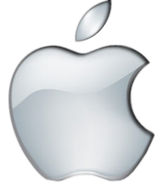
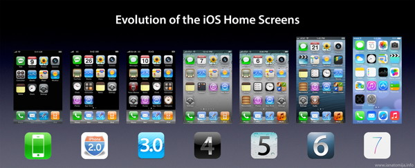

Hackintos

Nama Anggota :
- 1. Agung Prabowo (13.111.1505)
- 2. Baginda Hakim nst (13.111.1785)
- 3. Muhammad Irfan Pratama (13.111.1394)
- 4. Richard Kevin (13.111.2829)
- 
- IOS 1
- iOS1 - Hadirnya iPhone Pertama tahun 2007
iOS1 merupakan sistem operasi iPhone pertama yang diluncurkan oleh Apple seiring dengan diluncurkannya iPhone. Di generasi pertama iOS ini, fitur-fiturnya cukup minim. Tidak ada copy paste, tidak ada App Store. Namun diperkenalkan iPhone dengan layar sentuh resistive, telah membuat orang terpesona dengan kehadiran iPhone dengan sistem operasi iOS1
- IOS 2
- IOS 2: Mulai Diperkenalkan App Store - 2008
Mulai iOS2 Apple memperkenalkan App Store, sebuah toko aplikasi online, dimana Anda bisa dengan mudah download aplikasi dan game langsung dari iPhone dengan terlebih login menggunakan Akun iTunes/ App Store. Fitur lain yang diperkenalkan Apple adalah Microsoft Exchange dan tentu saja Google Map dengan fitur yang lebih disempurnakan.
- IOS 3
- IOS 3 - 2009
Apple menghadirkan iOS3 untuk menyempurnakan iOS2, di iOS3 mulai memperkenalkan fitur copy paste, juga ada menu spotlight search yang sangat bermanfaat untuk mencari aplikasi atau kontak, Find My iPhone, voice control, Bluetooth dan USB tethering.
- IOS 4
- IOS 4 tahun 2010 : Mulai Hadir Facetime, Multitasking, dan Layar Retina & FaceTime [2010]
Di iOS4 Apple menghadirkan fitur teranyarnya yakni MultiTasking, dimana kita bisa beralih dari satu aplikasi ke aplikasi dengan mudah dan cepat. Kehadiran Retina Display untuk iPhone, membuat tampilan game di iOS4 semakin kinclong. Tak ketinggalan di iOS4 kita bisa menggunakan iPhone sebagai Hotspot.
- IOS 5
- IOS 5: Notification Center dan Siri - 2011
Di tahun 2011, Apple merelease iOS5. Fitur utamanya adalah Siri dan Notification Center. Tak ketinggal fitur iCloud juga mulai diperkenalkan, dimana kita bisa menyimpan file, foto sampai video di iCloud, sehingga bisa dengan mudah diakses dari iDevice lain. Di iOS5 juga kita bisa mulai mengupdate iOS via koneksi Wifi langsung dari iPhone kita.
- IOS 6
- IOS 6: Hilangnya Google Map diganti Apple Map dan hadirnya Passbook - 2012
iOS 6 hadir pada setelah direleasenya iOS5 yakni pada tahun 2012. Yang paling fenomenal dari iOS6 adalah hadirnya Apple Map sebagai Map default yang menggantikan Google Map. Juga hilangkan aplikasi default Youtube. Sebagai gantinya kita harus menginstall Google Map atau Youtube dari App Store. Di iOS6 juga Apple mulai memperkenalkan Passbook.
- IOS 7
- iOS7 : Tampilan Baru iOS - 2013
Setelah sebelumnya tampilan iOS tampil sama sampai iOS6. Nah, di iOS7 Apple memperkenalkan desain dan tampilan baru di iOS7 yaitu Flat. Icon aplikasi tampil Flat tanpa efek 3D, sehingga kelihatan lebih bersih dan enak dipandang mata. Fitur-fitur baru dariiOS7 diantaranya adalah
- IOS 8
- iOS 8 adalah sistem operasi seluler iOS yang didesain oleh Apple Inc sebagai suksesor iOS 7. Ini diumumkan saat acara tahunan Worldwide Developers Conference (WWDC) pada tanggal 3 Juni 2014. Sebuah aplikasi baru bernama Health, dan sebuah kerangka kerja bernama HealthKit yang akan segera tersedia. Siri akan mendukung aktivasi tanpa disentuh dan identifikasi musik menggunakan Shazam.
- Kelebihan :
- jumlah Aplikasi dan games terbanyak dibanding OS smartphone lain. Punya kontrol ketat terhadap kualitas aplikasi yang ada di apps store. Performa & kualitas menjalankan aplikasi/games lebih bagus dibanding smartphone dengan OS lainnya. Device-device lama bisa mendapat update OS walau secara hardware jauh tertinggal. Pelopor could computing (media penyimpanan data secara online). Garansi device internasional Harga jual kembali lebih stabil.
- Kekurangan :
- Harga devicenya lebih mahal. Media konektifitas seperti bluetooth & wifi sharing terbatas hanya untuk sesama perangkat iOS (bisa diakali dengan cara membeli aplikasi di apps store). Aplikasi-aplikasi tertentu banyak terdapat versi berbayar/trial (bisa diakali dengan jailbreak dan dapat memasang aplikasi bajakan). Harus terkoneksi dengan iTunes jika ingin share media file dengan PC atau Notebook. Tidak ada slot micro SD dan baterai sudah built in ( tidak bisa dicopot). Itulah tadi ulasan mengenai kelebihan dan kekurangan Apple iOS. Semoga bermanfaat.